2018 年 10 月 31 日 ，Spring Cloud Alibaba 正式入驻了 Spring Cloud 官方孵化器，并在 Maven 中央库发布了第一个版本。
Spring Cloud Alibaba 致力于提供微服务开发的一站式解决方案。此项目包含开发分布式应用微服务的必需组件，方便开发者通过 Spring Cloud 编程模型轻松使用这些组件来开发分布式应用服务。
依托 Spring Cloud Alibaba，您只需要添加一些注解和少量配置，就可以将 Spring Cloud 应用接入阿里微服务解决方案，通过阿里中间件来迅速搭建分布式应用系统。
服务限流降级 ：默认支持 Servlet、Feign、RestTemplate、Dubbo 和 RocketMQ 限流降级功能的接入，可以在运行时通过控制台实时修改限流降级规则，还支持查看限流降级 Metrics 监控。
服务注册与发现 ：适配 Spring Cloud 服务注册与发现标准，默认集成了 Ribbon 的支持。
分布式配置管理 ：支持分布式系统中的外部化配置，配置更改时自动刷新。
消息驱动能力 ：基于 Spring Cloud Stream 为微服务应用构建消息驱动能力。
阿里云对象存储 ：阿里云提供的海量、安全、低成本、高可靠的云存储服务。支持在任何应用、任何时间、任何地点存储和访问任意类型的数据。
分布式任务调度 ：提供秒级、精准、高可靠、高可用的定时（基于 Cron 表达式）任务调度服务。同时提供分布式的任务执行模型，如网格任务。网格任务支持海量子任务均匀分配到所有 Worker（schedulerx-client）上执行。
Sentinel ：把流量作为切入点，从流量控制、熔断降级、系统负载保护等多个维度保护服务的稳定性。
Nacos ：一个更易于构建云原生应用的动态服务发现、配置管理和服务管理平台。
RocketMQ ：一款开源的分布式消息系统，基于高可用分布式集群技术，提供低延时的、高可靠的消息发布与订阅服务。
Alibaba Cloud ACM ：一款在分布式架构环境中对应用配置进行集中管理和推送的应用配置中心产品。
Alibaba Cloud OSS : 阿里云对象存储服务（Object Storage Service，简称 OSS），是阿里云提供的海量、安全、低成本、高可靠的云存储服务。您可以在任何应用、任何时间、任何地点存储和访问任意类型的数据。
Alibaba Cloud SchedulerX : 阿里中间件团队开发的一款分布式任务调度产品，提供秒级、精准、高可靠、高可用的定时（基于 Cron 表达式）任务调度服务。
在 Spring Cloud Netflix 阶段我们采用 Eureka 做作为我们的服务注册与发现服务器，现利用 Spring Cloud Alibaba 提供的 Nacos 组件替代该方案。
Nacos 致力于帮助您发现、配置和管理微服务。Nacos 提供了一组简单易用的特性集，帮助您快速实现动态服务发现、服务配置、服务元数据及流量管理。
Nacos 帮助您更敏捷和容易地构建、交付和管理微服务平台。 Nacos 是构建以“服务”为中心的现代应用架构 (例如微服务范式、云原生范式) 的服务基础设施。
Nacos基本架构图
Nacos 依赖 Java 环境来运行。如果您是从代码开始构建并运行 Nacos，还需要为此配置 Maven 环境，请确保是在以下版本环境中安装使用:
64 bit OS，支持 Linux/Unix/Mac/Windows，推荐选用 Linux/Unix/Mac。
64 bit JDK 1.8+
Maven 3.2.x+
到Nacos的github项目地址： https://github.com/alibaba/nacos
找到快速开始：
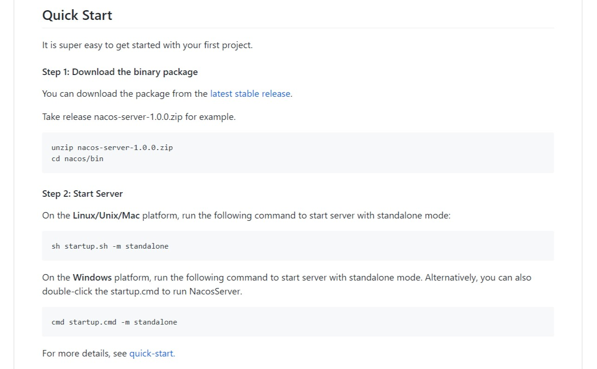
点击 latest stable release 调转到压缩包下载。
选择最新的版本，以linux为内核的系统下载以 tar.gz结尾的，windows就下载 zip 的。
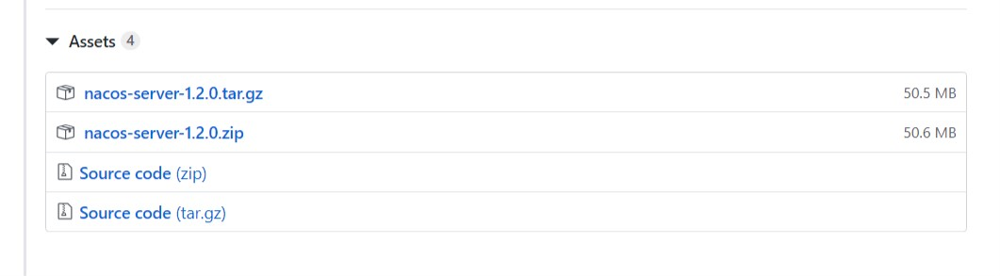
这里以 windows 为例，下载后解压，然后进入 /bin 目录双击 startup.cmd。
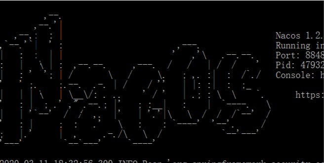
看到这个标志说明启动成功！紧接着访问： http://localhost:8848/nacos
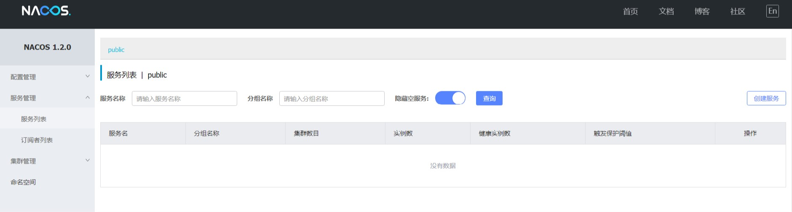
在本地磁盘任意地方创建一个名为 spring_cloud_alibaba 文件夹用来存放项目
用idea软件打开该文件夹，右击项目文件夹，new一个module子项目，名为 spring-cloud-alibaba-dependencies
pom.xml文件添加相关依赖：
1 2 3 4 5 6 7 8 9 10 11 12 13 14 15 16 17 18 19 20 21 22 23 24 25 26 27 28 29 30 31 32 33 34 35 36 37 38 39 40 41 42 43 44 45 46 47 48 49 50 51 52 53 54 55 56 57 58 59 60 61 62 63 64 65 66 67 68 69 70 71 72 73 74 75 76 77 78 79 80 81 82 83 84 85 86 87 88 89 90 91 92 93 94 95 96 97 98 99 100 101 102 103 104 105 106 107 108 109 110 111 112 113 114 115 116 117 118 119 120 121 122 123 124 125 126 127 128 129 130 131 132 133 134 135 136 137 138 139 140 141 142 143 144 145 146 147 148 149 150 151 152 153 154 155 156 157 158 159 160 161 162 163 164 165 166 167 168 169 170 171 172 173 174 175 176 177 178 179 180 181 182 183 184 185 186 187 188 189 <groupId > org.example</groupId > <artifactId > spring-cloud-alibaba-dependencies</artifactId > <version > 1.0-SNAPSHOT</version > <packaging > pom</packaging > <parent > <groupId > org.springframework.boot</groupId > <artifactId > spring-boot-starter-parent</artifactId > <version > 2.0.6.RELEASE</version > </parent > <properties > <java.version > 11</java.version > <project.build.sourceEncoding > UTF-8</project.build.sourceEncoding > <project.reporting.outputEncoding > UTF-8</project.reporting.outputEncoding > <spring-cloud.version > Finchley.SR2</spring-cloud.version > <spring-cloud-alibaba.version > 0.2.1.RELEASE</spring-cloud-alibaba.version > </properties > <dependencyManagement > <dependencies > <dependency > <groupId > org.springframework.cloud</groupId > <artifactId > spring-cloud-dependencies</artifactId > <version > ${spring-cloud.version}</version > <type > pom</type > <scope > import</scope > </dependency > <dependency > <groupId > org.springframework.cloud</groupId > <artifactId > spring-cloud-alibaba-dependencies</artifactId > <version > ${spring-cloud-alibaba.version}</version > <type > pom</type > <scope > import</scope > </dependency > </dependencies > </dependencyManagement > <build > <plugins > <plugin > <groupId > org.apache.maven.plugins</groupId > <artifactId > maven-compiler-plugin</artifactId > <configuration > <showWarnings > true</showWarnings > </configuration > </plugin > <plugin > <groupId > org.apache.maven.plugins</groupId > <artifactId > maven-jar-plugin</artifactId > <configuration > <archive > <addMavenDescriptor > false</addMavenDescriptor > </archive > </configuration > <executions > <execution > <configuration > <archive > <manifest > <addDefaultImplementationEntries > true</addDefaultImplementationEntries > <addDefaultSpecificationEntries > true</addDefaultSpecificationEntries > <addClasspath > true</addClasspath > </manifest > </archive > </configuration > </execution > </executions > </plugin > <plugin > <groupId > org.apache.maven.plugins</groupId > <artifactId > maven-resources-plugin</artifactId > </plugin > <plugin > <groupId > org.apache.maven.plugins</groupId > <artifactId > maven-install-plugin</artifactId > </plugin > <plugin > <groupId > org.apache.maven.plugins</groupId > <artifactId > maven-clean-plugin</artifactId > </plugin > <plugin > <groupId > org.apache.maven.plugins</groupId > <artifactId > maven-antrun-plugin</artifactId > </plugin > <plugin > <groupId > org.apache.maven.plugins</groupId > <artifactId > maven-dependency-plugin</artifactId > </plugin > </plugins > <resources > <resource > <directory > src/main/java</directory > <excludes > <exclude > **/*.java</exclude > </excludes > </resource > <resource > <directory > src/main/resources</directory > </resource > </resources > </build > <repositories > <repository > <id > aliyun-repos</id > <name > Aliyun Repository</name > <url > http://maven.aliyun.com/nexus/content/groups/public</url > <releases > <enabled > true</enabled > </releases > <snapshots > <enabled > false</enabled > </snapshots > </repository > <repository > <id > sonatype-repos</id > <name > Sonatype Repository</name > <url > https://oss.sonatype.org/content/groups/public</url > <releases > <enabled > true</enabled > </releases > <snapshots > <enabled > false</enabled > </snapshots > </repository > <repository > <id > sonatype-repos-s</id > <name > Sonatype Repository</name > <url > https://oss.sonatype.org/content/repositories/snapshots</url > <releases > <enabled > false</enabled > </releases > <snapshots > <enabled > true</enabled > </snapshots > </repository > <repository > <id > spring-snapshots</id > <name > Spring Snapshots</name > <url > https://repo.spring.io/snapshot</url > <snapshots > <enabled > true</enabled > </snapshots > </repository > <repository > <id > spring-milestones</id > <name > Spring Milestones</name > <url > https://repo.spring.io/milestone</url > <snapshots > <enabled > false</enabled > </snapshots > </repository > </repositories > <pluginRepositories > <pluginRepository > <id > aliyun-repos</id > <name > Aliyun Repository</name > <url > http://maven.aliyun.com/nexus/content/groups/public</url > <releases > <enabled > true</enabled > </releases > <snapshots > <enabled > false</enabled > </snapshots > </pluginRepository > </pluginRepositories >
parent：继承了 Spring Boot 的 Parent，表示我们是一个 Spring Boot 工程
package：pom，表示该项目仅当做依赖项目，没有具体的实现代码
spring-cloud-alibaba-dependencies：在 properties 配置中预定义了版本号为 0.2.1.RELEASE ，表示我们的 Spring Cloud Alibaba 对应的是 Spring Cloud Finchley 版本
build：配置了项目所需的各种插件
repositories：配置项目下载依赖时的第三方库
这里需要注意的是 Spring Boot和Spring Cloud Alibaba的版本要对应
Spring Boot Spring Cloud Spring Cloud Alibaba
2.1.x
Greenwich
0.9.x
2.0.x
Finchley
0.2.x
1.5.x
Edgware
0.1.x
1.5.x
Dalston
0.1.x
通过一个简单的示例来感受一下如何将服务注册到 Nacos，其实和 Eureka 没有太大差别。
右击项目，new一个名为 spring-cloud-alibaba-nacos-provider module项目，pom.xml文件：
1 2 3 4 5 6 7 8 9 10 11 12 13 14 15 16 17 18 19 20 21 22 23 24 25 26 27 28 29 30 31 32 33 34 35 36 37 38 39 40 41 42 43 44 45 46 47 48 49 <parent > <groupId > org.example</groupId > <artifactId > spring-cloud-alibaba-dependencies</artifactId > <version > 1.0-SNAPSHOT</version > <relativePath > ../spring-cloud-alibaba-dependencies/pom.xml</relativePath > </parent > <artifactId > spring-cloud-alibaba-nacos-provider</artifactId > <packaging > jar</packaging > <name > spring-cloud-alibaba-nacos-provider</name > <inceptionYear > 2018-Now</inceptionYear > <dependencies > <dependency > <groupId > org.springframework.boot</groupId > <artifactId > spring-boot-starter-web</artifactId > </dependency > <dependency > <groupId > org.springframework.boot</groupId > <artifactId > spring-boot-starter-actuator</artifactId > </dependency > <dependency > <groupId > org.springframework.boot</groupId > <artifactId > spring-boot-starter-test</artifactId > <scope > test</scope > </dependency > <dependency > <groupId > org.springframework.cloud</groupId > <artifactId > spring-cloud-starter-alibaba-nacos-discovery</artifactId > </dependency > </dependencies > <build > <plugins > <plugin > <groupId > org.springframework.boot</groupId > <artifactId > spring-boot-maven-plugin</artifactId > <configuration > <mainClass > org.lee.spring.cloud.alibaba.nacos.provider.NacosProviderApplication</mainClass > </configuration > </plugin > </plugins > </build >
在该子项目的resourses目录下创建配置文件application.yml：
1 2 3 4 5 6 7 8 9 10 11 12 13 14 15 16 spring: application: name: nacos-provider cloud: nacos: discovery: server-addr: 127.0 .0 .1 :8848 server: port: 8081 management: endpoints: web: exposure: include: "*"
在src目录的java下，创建 org.lee.spring.cloud.alibaba.nacos.provider包，再创建启动类：
1 2 3 4 5 6 7 8 9 10 11 12 13 package org.lee.spring.cloud.alibaba.nacos.provider;import org.springframework.boot.SpringApplication;import org.springframework.boot.autoconfigure.SpringBootApplication;import org.springframework.cloud.client.discovery.EnableDiscoveryClient;@SpringBootApplication @EnableDiscoveryClient public class NacosProviderApplication public static void main (String[] args) SpringApplication.run(NacosProviderApplication.class ,args ) ; } }
创建controller包，添加controller方法：
1 2 3 4 5 6 7 8 9 10 11 12 13 14 package org.lee.spring.cloud.alibaba.nacos.provider.controller;import org.springframework.web.bind.annotation.GetMapping;import org.springframework.web.bind.annotation.PathVariable;import org.springframework.web.bind.annotation.RestController;@RestController public class NacosProviderController @GetMapping (value = "/echo/{message}" ) public String echo (@PathVariable String message) return "Hello Nacos Discovery " + message; } }
启动该子工程，通过浏览器访问 http://localhost:8848/nacos，即 Nacos Server 网址
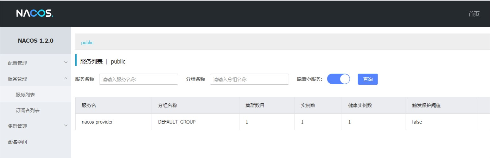
你会发现一个服务已经注册在服务中了，服务名为 nacos-provider
这时打开 http://localhost:8081/echo/hi ，你会在浏览器上看到：
1 Hello Nacos Discovery hi
spring-cloud-starter-alibaba-nacos-discovery 在实现的时候提供了一个 EndPoint, EndPoint 的访问地址为 http://ip:port/actuator/nacos-discovery。 EndPoint 的信息主要提供了两类:
1 2 1、subscribe: 显示了当前有哪些服务订阅者 2、NacosDiscoveryProperties: 显示了当前服务实例关于 Nacos 的基础配置
通过浏览器访问 http://localhost:8081/actuator/nacos-discovery 你会在浏览器上看到：
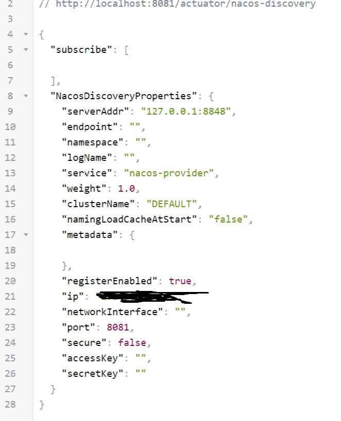
服务消费者的创建与服务提供者大同小异，这里采用最原始的一种方式，即显示的使用 LoadBalanceClient 和 RestTemplate 结合的方式来访问。
创建一个工程名为 spring-cloud-alibaba-nacos-consumer 的服务消费者项目，pom.xml 配置如下：
1 2 3 4 5 6 7 8 9 10 11 12 13 14 15 16 17 18 19 20 21 22 23 24 25 26 27 28 29 30 31 32 33 34 35 36 37 38 39 40 41 42 43 44 45 46 47 48 <parent > <groupId > org.example</groupId > <artifactId > spring-cloud-alibaba-dependencies</artifactId > <version > 1.0-SNAPSHOT</version > <relativePath > ../spring-cloud-alibaba-dependencies/pom.xml</relativePath > </parent > <artifactId > spring-cloud-alibaba-nacos-provider</artifactId > <packaging > jar</packaging > <name > spring-cloud-alibaba-nacos-provider</name > <dependencies > <dependency > <groupId > org.springframework.boot</groupId > <artifactId > spring-boot-starter-web</artifactId > </dependency > <dependency > <groupId > org.springframework.boot</groupId > <artifactId > spring-boot-starter-actuator</artifactId > </dependency > <dependency > <groupId > org.springframework.boot</groupId > <artifactId > spring-boot-starter-test</artifactId > <scope > test</scope > </dependency > <dependency > <groupId > org.springframework.cloud</groupId > <artifactId > spring-cloud-starter-alibaba-nacos-discovery</artifactId > </dependency > </dependencies > <build > <plugins > <plugin > <groupId > org.springframework.boot</groupId > <artifactId > spring-boot-maven-plugin</artifactId > <configuration > <mainClass > org.lee.spring.cloud.alibaba.nacos.provider.NacosProviderApplication</mainClass > </configuration > </plugin > </plugins > </build >
1 2 3 4 5 6 7 8 9 10 11 12 13 14 15 16 spring: application: name: nacos-consumer cloud: nacos: discovery: server-addr: 127.0 .0 .1 :8848 server: port: 9091 management: endpoints: web: exposure: include: "*"
1 2 3 4 5 6 7 8 9 10 11 12 13 package org.lee.spring.cloud.alibaba.nacos.consumer;import org.springframework.boot.SpringApplication;import org.springframework.boot.autoconfigure.SpringBootApplication;import org.springframework.cloud.client.discovery.EnableDiscoveryClient;@SpringBootApplication @EnableDiscoveryClient public class NacosConsumerApplication public static void main (String[] args) SpringApplication.run(NacosConsumerApplication.class ,args ) ; } }
创建一个名为 NacosConsumerConfiguration 的 Java 配置类，主要作用是为了注入 RestTemplate
1 2 3 4 5 6 7 8 9 10 11 12 13 package org.lee.spring.cloud.alibaba.nacos.consumer.config;import org.springframework.context.annotation.Bean;import org.springframework.context.annotation.Configuration;import org.springframework.web.client.RestTemplate;@Configuration public class NacosConsumerConfiguration @Bean public RestTemplate restTemplate () return new RestTemplate(); } }
创建一个名为 NacosConsumerController 测试用的 Controller
1 2 3 4 5 6 7 8 9 10 11 12 13 14 15 16 17 18 19 20 21 22 23 24 25 26 27 28 29 30 package org.lee.spring.cloud.alibaba.nacos.consumer.controller;import org.springframework.beans.factory.annotation.Autowired;import org.springframework.beans.factory.annotation.Value;import org.springframework.cloud.client.ServiceInstance;import org.springframework.cloud.client.loadbalancer.LoadBalancerClient;import org.springframework.web.bind.annotation.GetMapping;import org.springframework.web.bind.annotation.RestController;import org.springframework.web.client.RestTemplate;@RestController public class NacosConsumerController @Autowired private LoadBalancerClient loadBalancerClient; @Autowired private RestTemplate restTemplate; @Value ("${spring.application.name}" ) private String appName; @GetMapping (value = "/echo/app/name" ) public String echo () ServiceInstance serviceInstance = loadBalancerClient.choose("nacos-provider" ); String url = String.format("http://%s:%s/echo/%s" , serviceInstance.getHost(), serviceInstance.getPort(), appName); return restTemplate.getForObject(url, String.class ) ; } }
通过浏览器访问 http://localhost:8848/nacos，即 Nacos Server 网址
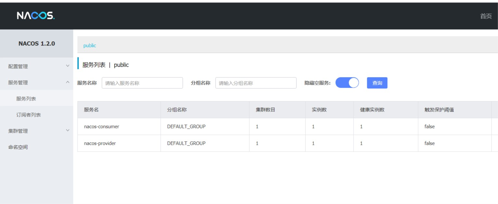
你会发现多了一个名为 nacos-consumer 的服务
这时打开 http://localhost:9091/echo/app/name ，你会在浏览器上看到：
1 Hello Nacos Discovery nacos-consumer
通过浏览器访问 http://localhost:9091/actuator/nacos-discovery 你会在浏览器上看到同样的json
Feign 是一个声明式的伪 Http 客户端，它使得写 Http 客户端变得更简单。使用 Feign，只需要创建一个接口并注解。它具有可插拔的注解特性，可使用 Feign 注解和 JAX-RS 注解。Feign 支持可插拔的编码器和解码器。Feign 默认集成了 Ribbon，Nacos 也很好的兼容了 Feign，默认实现了负载均衡的效果
Feign 采用的是基于接口的注解
Feign 整合了 ribbon
创建一个工程名为 spring-cloud-alibaba-nacos-consumer-feign 的服务消费者项目，pom.xml 配置如下：
1 2 3 4 5 6 7 8 9 10 11 12 13 14 15 16 17 18 19 20 21 22 23 24 25 26 27 28 29 30 31 32 33 34 35 36 37 38 39 40 41 42 43 44 45 46 47 48 49 50 51 52 53 54 <parent > <groupId > org.example</groupId > <artifactId > spring-cloud-alibaba-dependencies</artifactId > <version > 1.0-SNAPSHOT</version > <relativePath /> </parent > <artifactId > spring-cloud-alibaba-nacos-consumer-feign</artifactId > <version > 1.0-SNAPSHOT</version > <packaging > jar</packaging > <name > spring-cloud-alibaba-nacos-consumer-feign</name > <dependencies > <dependency > <groupId > org.springframework.boot</groupId > <artifactId > spring-boot-starter-web</artifactId > </dependency > <dependency > <groupId > org.springframework.boot</groupId > <artifactId > spring-boot-starter-actuator</artifactId > </dependency > <dependency > <groupId > org.springframework.boot</groupId > <artifactId > spring-boot-starter-test</artifactId > <scope > test</scope > </dependency > <dependency > <groupId > org.springframework.cloud</groupId > <artifactId > spring-cloud-starter-alibaba-nacos-discovery</artifactId > </dependency > <dependency > <groupId > org.springframework.cloud</groupId > <artifactId > spring-cloud-starter-openfeign</artifactId > </dependency > </dependencies > <build > <plugins > <plugin > <groupId > org.springframework.boot</groupId > <artifactId > spring-boot-maven-plugin</artifactId > <configuration > <mainClass > com.funtl.hello.spring.cloud.alibaba.nacos.consumer.feign.NacosConsumerFeignApplication</mainClass > </configuration > </plugin > </plugins > </build >
主要增加了 org.springframework.cloud:spring-cloud-starter-openfeign 依赖
1 2 3 4 5 6 7 8 9 10 11 12 13 14 15 16 spring: application: name: nacos-consumer-feign cloud: nacos: discovery: server-addr: 127.0 .0 .1 :8848 server: port: 9092 management: endpoints: web: exposure: include: "*"
1 2 3 4 5 6 7 8 9 10 11 12 13 14 15 package org.lee.spring.cloud.alibaba.nacos.consumer.feign;import org.springframework.boot.SpringApplication;import org.springframework.boot.autoconfigure.SpringBootApplication;import org.springframework.cloud.client.discovery.EnableDiscoveryClient;import org.springframework.cloud.openfeign.EnableFeignClients;@SpringBootApplication @EnableDiscoveryClient @EnableFeignClients public class NacosConsumerFeignApplication public static void main (String[] args) SpringApplication.run(NacosConsumerFeignApplication.class ,args ) ; } }
通过 @EnableFeignClients 注解开启 Feign 功能
1 2 3 4 5 6 7 8 9 10 11 package org.lee.spring.cloud.alibaba.nacos.consumer.feign.service;import org.springframework.cloud.openfeign.FeignClient;import org.springframework.web.bind.annotation.GetMapping;import org.springframework.web.bind.annotation.PathVariable;@FeignClient (value = "nacos-provider" )public interface EchoService @GetMapping (value = "/echo/{message}" ) String echo (@PathVariable("message" ) String message) ; }
通过 @FeignClient("服务名") 注解来指定调用哪个服务。
1 2 3 4 5 6 7 8 9 10 11 12 13 14 15 16 17 18 package org.lee.spring.cloud.alibaba.nacos.consumer.feign.controller;import org.lee.spring.cloud.alibaba.nacos.consumer.feign.service.EchoService;import org.springframework.beans.factory.annotation.Autowired;import org.springframework.web.bind.annotation.GetMapping;import org.springframework.web.bind.annotation.RestController;@RestController public class NacosConsumerFeignController @Autowired private EchoService echoService; @GetMapping (value = "/echo/hi" ) public String echo () return echoService.echo("Hi Feign" ); } }
通过浏览器访问 http://localhost:8848/nacos，即 Nacos Server 网址
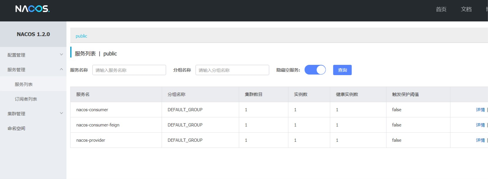
你会发现多了一个名为 nacos-consumer-feign 的服务；
这时打开 http://localhost:9092/echo/hi ，你会在浏览器上看到：
1 Hello Nacos Discovery Hi Feign
启动多个 consumer-provider 实例，修改provider子项目的配置文件的端口为8082；
找到idea编辑器顶部菜单，找到run----->Edit Configurations…----->选择provider启动了，勾选右边的Allow parallel run
再次运行NacosProviderApplication启动类，就会创建一个新的实例。
效果图：
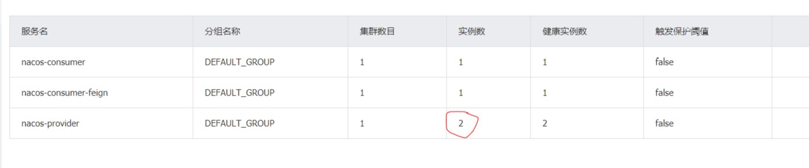
修改 consumer-provider 项目中的 Controller 代码，用于确定负载均衡生效
1 2 3 4 5 6 7 8 9 10 11 12 13 14 15 16 17 18 package org.lee.spring.cloud.alibaba.nacos.provider.controller;import org.springframework.beans.factory.annotation.Value;import org.springframework.web.bind.annotation.GetMapping;import org.springframework.web.bind.annotation.PathVariable;import org.springframework.web.bind.annotation.RestController;@RestController public class NacosProviderController @Value ("${server.port}" ) private String port; @GetMapping (value = "/echo/{message}" ) public String echo (@PathVariable String message) return "Hello Nacos Discovery " + message + "i am from port " + port; } }
重启8081和8082两个端口的实例
在浏览器上多次访问 http://localhost:9092/echo/hi ，浏览器交替显示端口变化。
在微服务架构中，根据业务来拆分成一个个的服务，服务与服务之间可以通过 RPC 相互调用，在 Spring Cloud 中可以用 RestTemplate + LoadBalanceClient 和 Feign 来调用。为了保证其高可用，单个服务通常会集群部署。由于网络原因或者自身的原因，服务并不能保证 100% 可用，如果单个服务出现问题，调用这个服务就会出现线程阻塞，此时若有大量的请求涌入，Servlet 容器的线程资源会被消耗完毕，导致服务瘫痪。服务与服务之间的依赖性，故障会传播，会对整个微服务系统造成灾难性的严重后果，这就是服务故障的 “雪崩” 效应。
为了解决这个问题，业界提出了熔断器模型。
阿里巴巴开源了 Sentinel 组件，实现了熔断器模式，Spring Cloud 对这一组件进行了整合。在微服务架构中，一个请求需要调用多个服务是非常常见的，如下图：
较底层的服务如果出现故障，会导致连锁故障。当对特定的服务的调用的不可用达到一个阀值熔断器将会被打开。
熔断器打开后，为了避免连锁故障，通过 fallback 方法可以直接返回一个固定值。
随着微服务的流行，服务和服务之间的稳定性变得越来越重要。 Sentinel 以流量为切入点，从流量控制、熔断降级、系统负载保护等多个维度保护服务的稳定性。
丰富的应用场景： Sentinel 承接了阿里巴巴近 10 年的 双十一大促流量 的核心场景，例如秒杀（即突发流量控制在系统容量可以承受的范围）、消息削峰填谷、实时熔断下游不可用应用等。
完备的实时监控： Sentinel 同时提供实时的监控功能。您可以在控制台中看到接入应用的单台机器秒级数据，甚至 500 台以下规模的集群的汇总运行情况。
广泛的开源生态： Sentinel 提供开箱即用的与其它开源框架/库的整合模块，例如与 Spring Cloud、Dubbo、gRPC 的整合。您只需要引入相应的依赖并进行简单的配置即可快速地接入 Sentinel。
完善的 SPI 扩展点： Sentinel 提供简单易用、完善的 SPI 扩展点。您可以通过实现扩展点，快速的定制逻辑。例如定制规则管理、适配数据源等。
如果要在您的项目中引入 Sentinel，使用 group ID 为 org.springframework.cloud 和 artifact ID 为 spring-cloud-starter-alibaba-sentinel 的 starter。
1 2 3 4 <dependency > <groupId > org.springframework.cloud</groupId > <artifactId > spring-cloud-starter-alibaba-sentinel</artifactId > </dependency >
Sentinel 适配了 Feign 组件。但默认是关闭的。需要在配置文件中配置打开它，在配置文件增加以下代码：
1 2 3 feign: sentinel: enabled: true
在 Service 中增加 fallback 指定类
1 2 3 4 5 6 7 8 9 10 11 12 package org.lee.spring.cloud.alibaba.nacos.consumer.feign.service;import org.lee.spring.cloud.alibaba.nacos.consumer.feign.service.fallback.EchoServiceFallback;import org.springframework.cloud.openfeign.FeignClient;import org.springframework.web.bind.annotation.GetMapping;import org.springframework.web.bind.annotation.PathVariable;@FeignClient (value = "nacos-provider" , fallback = EchoServiceFallback.class ) public interface EchoService @GetMapping (value = "/echo/{message}" ) String echo (@PathVariable("message" ) String message) ; }
1 2 3 4 5 6 7 8 9 10 11 12 package org.lee.spring.cloud.alibaba.nacos.consumer.feign.service.fallback;import org.lee.spring.cloud.alibaba.nacos.consumer.feign.service.EchoService;import org.springframework.stereotype.Component;@Component public class EchoServiceFallback implements EchoService @Override public String echo (String message) return "echo fallback" ; } }
此时我们关闭服务提供者，再次请求 http://localhost:9092/echo/hi 浏览器会显示：
Sentinel 控制台提供一个轻量级的控制台，它提供机器发现、单机资源实时监控、集群资源汇总，以及规则管理的功能。您只需要对应用进行简单的配置，就可以使用这些功能。
注意: 集群资源汇总仅支持 500 台以下的应用集群，有大概 1 - 2 秒的延时。
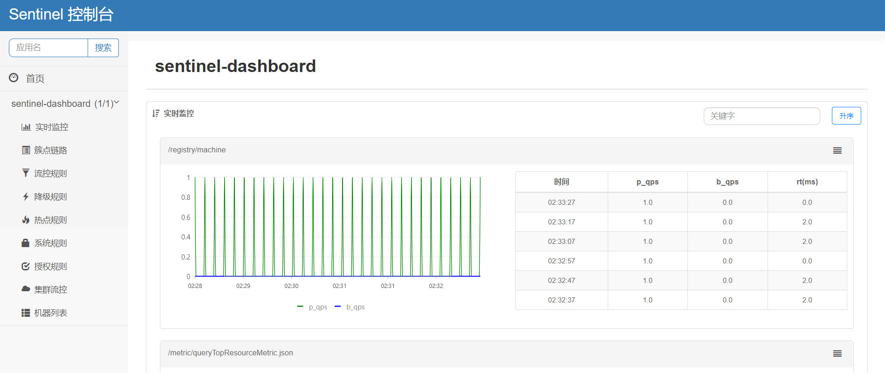
详细内容请到Sentinel的项目仓库查看文档： https://github.com/alibaba/Sentinel/wiki/%E4%BB%8B%E7%BB%8D
1 2 3 4 5 git clone https://github.com/alibaba/Sentinel.git mvn clean package
注：下载依赖时间较长，请耐心等待…
https://github.com/alibaba/Sentinel/wiki/%E6%8E%A7%E5%88%B6%E5%8F%B0
访问以上链接，或者直接去下载jar包： https://github.com/alibaba/Sentinel/releases
下载完成后运行：
1 java -Dserver.port=8080 -Dcsp.sentinel.dashboard.server=localhost:8080 -Dproject.name=sentinel-dashboard -jar sentinel-dashboard-1.7.1.jar
这里注意jar包的名称，我下载的是1.7.1版本。
跑起来后访问：localhost:8080，用户名密码默认：sentinel
如若 8080 端口冲突，可使用 -Dserver.port=新端口 进行设置。
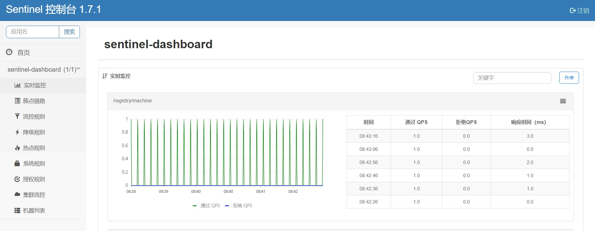
application.yml 配置文件中spring.cloud下增加如下配置：
1 2 3 4 sentinel: transport: port: 8719 dashboard: localhost:8080
这里的 spring.cloud.sentinel.transport.port 端口配置会在应用对应的机器上启动一个 Http Server，该 Server 会与 Sentinel 控制台做交互。比如 Sentinel 控制台添加了 1 个限流规则，会把规则数据 push 给这个 Http Server 接收，Http Server 再将规则注册到 Sentinel 中。
8719说白了就像是服务注册在nacos中一样，给应用一个端口注册到sentinel中让它监控该应用。
使用之前的 Feign 客户端，application.yml 完整配置如下：
1 2 3 4 5 6 7 8 9 10 11 12 13 14 15 16 17 18 19 20 21 22 23 24 25 spring: application: name: nacos-consumer-feign cloud: nacos: discovery: server-addr: 127.0 .0 .1 :8848 sentinel: transport: port: 8719 dashboard: localhost:8080 server: port: 9092 management: endpoints: web: exposure: include: "*" feign: sentinel: enabled: true
重启feign服务，访问sentinel控制台，发现还是原来的数据。
这里我们再次模拟熔断，访问： http://localhost:9092/echo/hi ，触发熔断。
然后再回到sentinel控制台刷新，就有监控到的数据了：
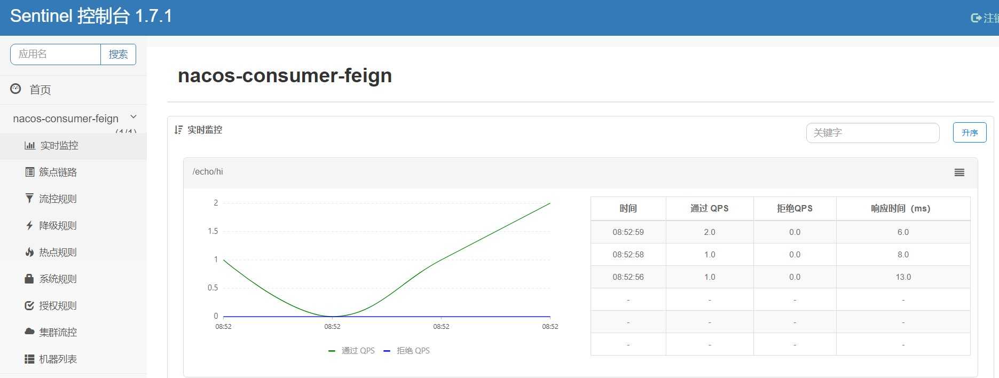
Spring Cloud Gateway 是 Spring 官方基于 Spring 5.0，Spring Boot 2.0 和 Project Reactor 等技术开发的网关，Spring Cloud Gateway 旨在为微服务架构提供一种简单而有效的统一的 API 路由管理方式。Spring Cloud Gateway 作为 Spring Cloud 生态系中的网关，目标是替代 Netflix ZUUL ，其不仅提供统一的路由方式，并且基于 Filter 链的方式提供了网关基本的功能，例如：安全，监控/埋点，和限流等。
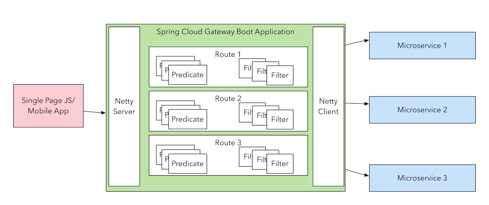
基于 Spring Framework 5，Project Reactor 和 Spring Boot 2.0
动态路由
Predicates 和 Filters 作用于特定路由
集成 Hystrix 断路器
集成 Spring Cloud DiscoveryClient
易于编写的 Predicates 和 Filters
限流
路径重写
客户端向 Spring Cloud Gateway 发出请求。然后在 Gateway Handler Mapping 中找到与请求相匹配的路由，将其发送到 Gateway Web Handler。Handler 再通过指定的过滤器链来将请求发送到我们实际的服务执行业务逻辑，然后返回。
过滤器之间用虚线分开是因为过滤器可能会在发送代理请求之前（pre）或之后（post）执行业务逻辑。
其实就相当于spring MVC的servletDispachter的工作流程
创建新module，名为spring-cloud-gateway，pom.xml文件如下：
1 2 3 4 5 6 7 8 9 10 11 12 13 14 15 16 17 18 19 20 21 22 23 24 25 26 27 28 29 30 31 32 33 34 35 36 37 38 39 40 41 42 43 44 45 46 47 48 49 50 51 52 53 54 55 56 57 58 59 60 61 62 63 64 65 <parent > <groupId > org.example</groupId > <artifactId > spring-cloud-alibaba-dependencies</artifactId > <version > 1.0-SNAPSHOT</version > <relativePath /> </parent > <artifactId > spring-cloud-gateway</artifactId > <version > 1.0-SNAPSHOT</version > <packaging > jar</packaging > <name > spring-cloud-gateway</name > <dependencies > <dependency > <groupId > org.springframework.boot</groupId > <artifactId > spring-boot-starter-actuator</artifactId > </dependency > <dependency > <groupId > org.springframework.boot</groupId > <artifactId > spring-boot-starter-test</artifactId > <scope > test</scope > </dependency > <dependency > <groupId > org.springframework.cloud</groupId > <artifactId > spring-cloud-starter-alibaba-nacos-discovery</artifactId > </dependency > <dependency > <groupId > org.springframework.cloud</groupId > <artifactId > spring-cloud-starter-alibaba-sentinel</artifactId > </dependency > <dependency > <groupId > org.springframework.cloud</groupId > <artifactId > spring-cloud-starter-openfeign</artifactId > </dependency > <dependency > <groupId > org.springframework.cloud</groupId > <artifactId > spring-cloud-starter-gateway</artifactId > </dependency > <dependency > <groupId > javax.servlet</groupId > <artifactId > javax.servlet-api</artifactId > </dependency > </dependencies > <build > <plugins > <plugin > <groupId > org.springframework.boot</groupId > <artifactId > spring-boot-maven-plugin</artifactId > <configuration > <mainClass > com.funtl.hello.spring.cloud.gateway.GatewayApplication</mainClass > </configuration > </plugin > </plugins > </build >
主要增加了 org.springframework.cloud:spring-cloud-starter-gateway 依赖
创建配置文件application.yml：
1 2 3 4 5 6 7 8 9 10 11 12 13 14 15 16 17 18 19 20 21 22 23 24 25 26 27 28 29 30 31 32 33 34 35 36 37 38 39 40 41 42 43 44 45 46 47 48 49 50 51 52 53 54 spring: application: name: spring-gateway cloud: nacos: discovery: server-addr: 127.0 .0 .1 :8848 sentinel: transport: port: 8721 dashboard: localhost:8080 gateway: discovery: locator: enabled: true routes: - id: NACOS-CONSUMER uri: lb://nacos-consumer predicates: - Method=GET,POST - id: NACOS-CONSUMER-FEIGN uri: lb://nacos-consumer-feign predicates: - Method=GET,POST server: port: 9000 feign: sentinel: enabled: true management: endpoints: web: exposure: include: "*" logging: level: org.springframework.cloud.gateway: debug
创建启动类：
1 2 3 4 5 6 7 8 9 10 11 12 13 14 15 package org.lee.spring.cloud.gateway;import org.springframework.boot.SpringApplication;import org.springframework.boot.autoconfigure.SpringBootApplication;import org.springframework.cloud.client.discovery.EnableDiscoveryClient;import org.springframework.cloud.openfeign.EnableFeignClients;@SpringBootApplication @EnableDiscoveryClient @EnableFeignClients public class GatewayApplication public static void main (String[] args) SpringApplication.run(GatewayApplication.class ,args ) ; } }
依次运行 Nacos 服务、NacosProviderApplication、NacosConsumerApplication、NacosConsumerFeignApplication、GatewayApplication
打开浏览器访问：http://localhost:9000/nacos-consumer/echo/app/name 浏览器显示
1 Hello Nacos Discovery nacos-consumer i am from port 8082
打开浏览器访问：http://localhost:9000/nacos-consumer-feign/echo/hi 浏览器显示
1 Hello Nacos Discovery Hi Feign i am from port 8082
注意：请求方式是 http://路由网关IP:路由网关Port/服务名/\**
至此说明 Spring Cloud Gateway 的路由功能配置成功